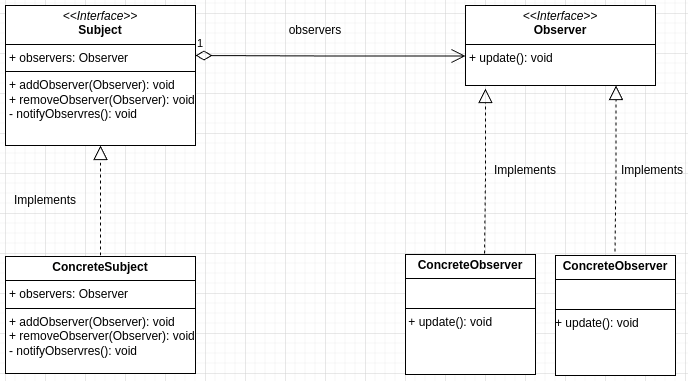

This article discusses situations where the observer pattern is a better option and why. First we go through some example scenarios and then the implementation details of the pattern.
Introduction
In many systems, one object changes and other objects of the system are interested to know about that change.
Objects that are interested to know about the change are called observers and we will call the interesting object subject. Observers observe the change of state in Subject. Change of state is a fancy way of saying some variable or attribute's value has changed.
This is a one-to-many relation, where a subject's change is propagated to many observers. Observer pattern suggests a robust and flexible architecture to implement this Observer and Subject relation.
Example Scenarios
Phone OTP messages
Bank apps often send OTPs for verification and automatically fill the code once received. The bank app knows a new message has arrived as soon as it arrives — and this is not special for bank apps, all kinds of apps have this nice automated message-reading and form fill-up feature.
Interested applications are notified on arrival of a message. Message inbox is the Subject and the apps waiting for OTP messages are Observers.
E-Commerce Dashboard
In an e-commerce dashboard, display cards show total order count, average revenue per order, and sales trends — all of which depend on the sales count. Whenever there is a new sale, these cards need to be updated.
The three display cards are Observers and they are observing Subject sales count.
Smart Home
We will use this example later in our code example below.
Our smart room has different smart devices — security cameras, lights, thermostats etc. For demonstration purposes we will consider the simplest interactions. Devices like cameras and lights respond to changes in room occupancy:
- Security cameras activate when there is human presence.
- Smart lights turn off automatically when there is no one in the room.
In this case:
- Smart room is the
Subject. - Devices like cameras and lights are
Observersthat need to update their behaviour based on the room's status.
Now that we have built the intuition of how Observers and Subject look in a system, let's find out how they interact.
How to Notify Observers?
The question is: how do we let Observers know the state of the Subject has changed?
We have two options:
Observerspoll the data at an interval to check if theSubject's state has changed.Subjectpushes the update to theObserverswhenever there is a change in its state.
Polling is simple to implement but may miss rapid changes and real-time updates. There is potential for resource wastage.
Pushing gives real-time updates, efficient use of resources, and ensures all changes are captured — though it is more complex to implement.
As our scenarios need a prompt reaction to Subject state changes, pushing notification is the better option.
And here comes the observer pattern — suggesting a loosely coupled code organisation that lets Subject notify its Observers about updates without knowing much about Observer class internals. Both Subject and Observers implement certain interfaces and communicate through those interfaces.
UML Class Diagram
Observer pattern's UML class diagram clarifies the relation and interaction between subject and observers.

We have two interfaces Subject and Observer. While interfaces provide a blueprint, concrete implementations actually implement the methods.
Subject has one attribute and three methods:
addObserver: lets an observer register itself for notifications from the Subject. After being added to the subject's observer list, it will be notified on updates.removeObserver: if the observer no longer wants to listen to changes, it can remove itself from the list and will not be bothered anymore.notifyObservers: does the work of notifying the subject's observers. When notifying an observer on the change, usually the changed data is also sent out. Another way is for the observer to fetch the data after it gets notified. We'll use the second option in our example code.
Any and all classes that want to act as a Subject must implement the above 3 methods.
The Observer interface has one method update. Concrete observer classes must implement this method.
update: called from the Subject'snotifyObserversmethod to let the observer know of a state change. Observer will write logic to respond to the change here.
Example Code for Observer Pattern
Goal: a smart home system with rooms, security cameras, and lights. Camera and light respond to the presence of persons in the room.
From the discussion above, observers are Light and Camera, and Room is our subject. Whenever the state of the room changes, light and camera will be notified.
Our examples are in Python. Python doesn't have the concept of Interface; we achieve the same using its Abstract Class concept. A brief on abstract classes is here — look for the Abstract Class in Python section. We will skip that discussion here as the article is already quite large.
Subject and Observer Interfaces
First we design our Subject and Observer interfaces (abstract classes).
from abc import ABC, abstractmethod
class Observer(ABC):
@abstractmethod
def update(self):
pass
class Subject(ABC):
@abstractmethod
def addObserver(self, observer: Observer):
pass
@abstractmethod
def removeObserver(self, observer: Observer):
pass
@abstractmethod
def notifyObservers(self):
pass
These classes are blueprints for our concrete classes. All abstract methods will be implemented there.
Room Subject Concrete Class
We have one Subject class Room. It implements all three methods of the Subject interface and two extra methods to change and access its state. The implementation is kept simple with inline comments.
class Room(Subject):
def __init__(self):
# initialize the observers list
self._observers = list()
# initialize the room with no person inside the room.
self._number_of_persons = 0
print("Initiated an empty room!")
# adds observer to the list
def addObserver(self, observer: Observer):
self._observers.append(observer)
# removes observer from the list
def removeObserver(self, observer: Observer):
self._observers.remove(observer)
# iterate through all listed observers and call their update method to notify them.
def notifyObservers(self):
for observer in self._observers:
observer.update()
# class specific methods
def setPerson(self, person: int): # change the state
self._number_of_persons = person
# state has changed, let's notify the observers
self.notifyObservers()
def getPerson(self): # access the state
return self._number_of_persons
Apart from implementing the 3 methods from Subject, it has two extra methods: setPerson and getPerson. These let outside code update or fetch the state of the Room. They are not mandatory for the pattern but necessary for the class to function in our context.
Light and Camera Observer Concrete Classes
Now let's code the concrete observers. Light and Camera will first register themselves to the Room subject's observer list through addObserver and implement the update method to respond to state changes in Room.
class Light(Observer):
def __init__(self, room: Room):
print("Initializing Lights!")
self._room = room
# register itself for door state change observation
self._room.addObserver(self)
def update(self): # state of the room has changed
# access the state from the subject
number_of_persons = self._room.getPerson()
# take some actions based on changed states
if number_of_persons == 0:
print(f"Light: Shutting down. {number_of_persons} persons in the room.")
else:
print(f"Light: Keep running. {number_of_persons} persons in the room.")
class Camera(Observer):
def __init__(self, room: Room):
print("Initializing Security Camera!")
self._room = room
# register itself for door state change observation
self._room.addObserver(self)
def update(self): # state of the room has changed
# access the state from the subject
number_of_persons = self._room.getPerson()
# take some actions based on changed states
if number_of_persons == 0:
print(f"Camera: Shutting down. {number_of_persons} persons in the room.")
else:
print(f"Camera: Keep running. {number_of_persons} persons in the room.")
Now let's add the calling code. First we initialise the Room instance and use it to initialise the Light and Camera instances. To update the number of persons in the room we call room.setPerson(), which in turn notifies and updates the state of light and camera.
if __name__ == "__main__":
room = Room()
light = Light(room)
camera = Camera(room)
room.setPerson(1)
room.setPerson(0) # camera and light will turn off
room.setPerson(5) # camera and light switched on again
Output:
Initiated an empty room!
Initializing Lights!
Initializing Security Camera!
Light: Keep running. 1 persons in the room.
Camera: Keep running. 1 persons in the room.
Light: Shutting down. 0 persons in the room.
Camera: Shutting down. 0 persons in the room.
Light: Keep running. 5 persons in the room.
Camera: Keep running. 5 persons in the room.
Full code is available in this GitHub repo.
Wrapping Up
A few points on the observer pattern:
- When working in a multi-threaded system, keep thread safety in mind when implementing observer pattern.
- If real-time updates are not necessary, observer pattern might not be a good fit.
- There are variations of this pattern — not all use the same OOP structure but the essence is the same.
- In more complex systems, the Publish-Subscribe pattern might be more suitable as it decouples the message sender from the receiver more thoroughly.
In conclusion, observer pattern is a handy toolkit for designing reactive systems. Web frameworks, UI frameworks, and event-driven programming systems use this pattern to bridge objects and establish communication channels. For developers working with these tools, observer pattern is a great mental model to have.